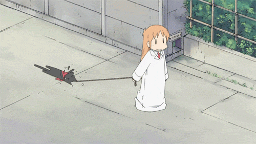
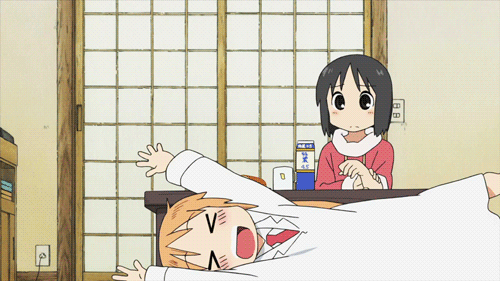

₍ᐢᐢ₎ Gênero: Drama/Comédia
Episódios: 26
Autor: Keiichi Arawi
Ano do lançamento: 2011 ₍ᐢᐢ₎
Na história, acompanhamos a vida de três amigas de infância
que estão agora no ensino médio: Mio Naganohara, Yuuko Alioi e Mai Miankami.

Eventualmente, elas vão cruzar o caminho de
mais três personagens muito excêntricos:
a gênio Hakase Shinonome, seu robô Nano e o seu gato falante Sakamoto.

Para quem ama histórias leves divididas por esquetes de comédia,
“Nichijou - My Ordinary Life” é o anime fofo e
perfeito para você começar a assistir hoje.
Nesse vídeo você vai poder conhecer pouco mais sobre esse anime incrível!
Você pode assistir no Chunchyroll. ദ്ദി（• ˕ •マ.ᐟ